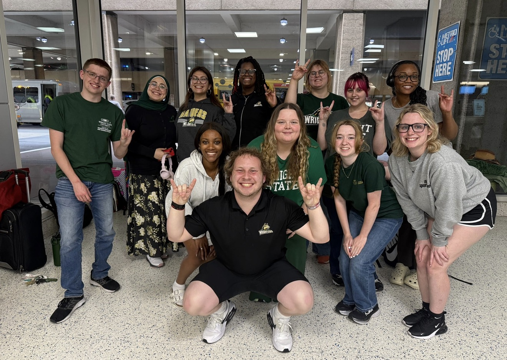
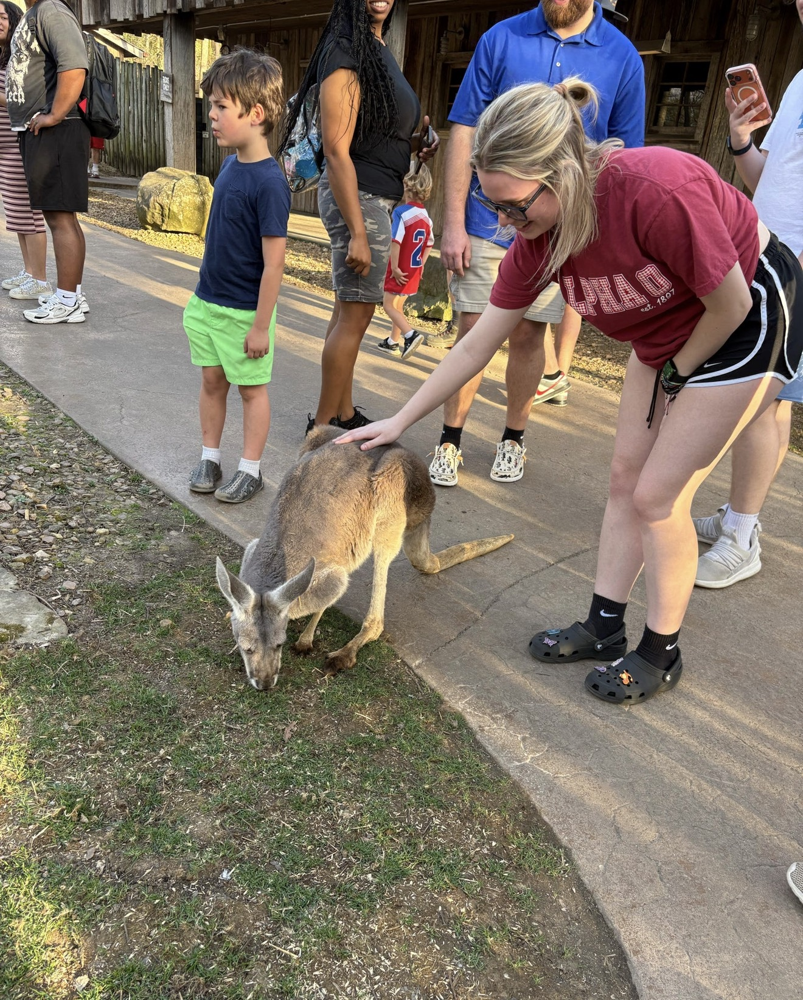

Pokémon
Collecting Pokémon cards, organizing my Pokédex binder, and embracing my love for all things Pokémon.
Developer, dreamer, and a work in progress. ♡

I am a first-generation graduate from Wright State University with a Bachelor of Science in Computer Science, currently continuing my education through a Master’s in Cybersecurity.
Throughout my time at Wright State, I have worked across multiple university departments, including the Admissions Department as a Student Ambassador, Residence Life and Housing as a Resident Assistant, and the College of Engineering and Computer Science Dean’s Office as both an Orientation Assistant and Teaching Assistant. I am passionate about continuing to grow my knowledge in programming, cybersecurity, and leadership while building meaningful connections and creating a positive impact within my communities.
Alongside my academic and professional experiences, I have remained highly involved on campus through organizations such as Engineers Without Borders, where I served as President for two years, the College Panhellenic Council as Vice President of Membership Recruitment, and Alpha Omicron Pi, where I previously served as Vice President of Membership Recruitment and as Chapter President.
When I'm not behind a keyboard and monitor, you can usually find me collecting Pokémon cards, listening to music, reading, playing video games, or finding a new creative project to start.
I aim to lead with empathy and intention, uplifting others while continuously growing into themost authentic and impactful version of myself.♡
Collecting Pokémon cards, organizing my Pokédex binder, and embracing my love for all things Pokémon.
Finding the perfect song for every mood and always having something playing in the background.
Exploring new tools, building personal projects, and turning random ideas into something real.
Getting lost in a good story and discovering new worlds, characters, and perspectives.
Playing games of all genres, from immersive story-driven adventures to competitive multiplayer experiences.
Designing, crafting, and finding little ways to express myself through creative projects.
A collection of moments, memories, and things that make me happy. ♡

